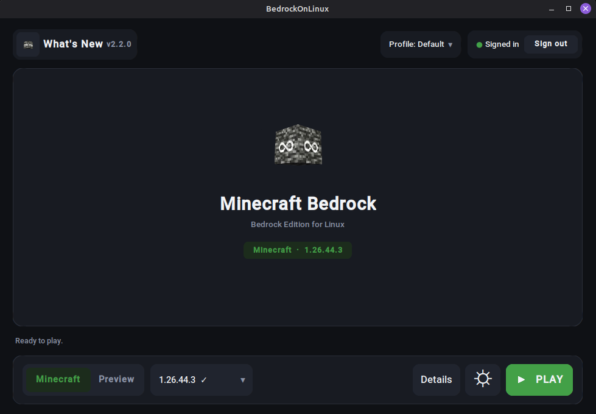

Real Xbox sign-in
Friends, invitations, joining a friend's world, public servers and Realms all run on a real Microsoft identity. It is implemented natively, not proxied through anything.
Free, open source, MIT, v2.2.1
Sign in with your real Microsoft account and play, with Realms, public servers and Xbox friends included. The game downloads from the Microsoft Store under your own licence.

One window. Pick an edition, press PLAY.
How it works
One file, one click. Nothing to configure, no Wine to learn, no compiler to install.
On Microsoft's own pages, never in the launcher. Your password stays between you and Microsoft, and only the resulting tokens are kept.
The first run downloads Minecraft and the engine, then verifies both. Every run after that just starts the game.
Download
Pick your system and take the file underneath. That is the whole decision.
Installs like any other app: it lands on your PATH and pulls in what it needs.
Then, in a terminal
sudo apt install ./bedrock-on-linux_2.2.1_amd64.deb
bedrock-on-linuxDebian, Ubuntu, Linux Mint and LMDE. Dependencies, including the WebKitGTK sign-in window, are declared for you.
Same deal as the .deb: a real system install with its dependencies declared.
Then, in a terminal
sudo dnf install ./bedrock-on-linux-2.2.1-1.x86_64.rpm
bedrock-on-linuxFedora and Nobara. On an atomic Fedora such as Silverblue, take the Flatpak instead.
One file that carries its own Python, GUI toolkit and certificates. Nothing to install.
Then, in a terminal
chmod +x BedrockOnLinux-2.2.1-x86_64.AppImage
./BedrockOnLinux-2.2.1-x86_64.AppImageNo FUSE on your system? Run it with APPIMAGE_EXTRACT_AND_RUN=1.
Download it in Desktop Mode, then add it to Steam. Game Mode is handled.
Once, in Desktop Mode
In Game Mode the launcher hands the screen to Minecraft, then comes back when you quit. Steam Input and Deck fullscreen behave normally.
For atomic systems where you cannot just install a package.
Then, in a terminal
flatpak install --user ./BedrockOnLinux-2.2.1-x86_64.flatpakSandboxed, so it cannot write desktop shortcuts. The Store sign-in also needs WebKitGTK, which this runtime does not ship yet, so on Bazzite the AppImage is the smoother ride today.
Every release also ships a portable .pyz and SHA-256 checksums.
All files and release notes are on GitHub.
You need to own Minecraft. The game is downloaded from Microsoft's own servers under your account's licence. BedrockOnLinux ships no Minecraft files and redistributes none.
What you get
Friends, invitations, joining a friend's world, public servers and Realms all run on a real Microsoft identity. It is implemented natively, not proxied through anything.
The package comes straight from Microsoft's CDN with your licence, and sign-in happens directly between you, Microsoft and Xbox. No third party sits in the middle.
One generated shortcut and Minecraft behaves like any other non-Steam game. The launcher steps aside while you play, then comes back when you quit.
Engine updates are hash-pinned and swapped atomically. A bad download, a full disk or a mismatched hash leaves the version that worked exactly where it was.
FAQ
Yes. The game is downloaded from the Microsoft Store under your own account's licence, so that account has to own Minecraft Bedrock Edition. You can also point the launcher at a copy you already have.
No. BedrockOnLinux ships no Minecraft files and redistributes none by proxy either. It is a compatibility launcher: it fetches the real package from Microsoft's CDN with your licence, then runs it on Wine.
Any x86-64 desktop with glibc: Ubuntu, Debian, Mint and LMDE, Fedora, Arch, openSUSE and their derivatives. Native packages for the Debian and Fedora families, an AppImage for everything else, a Flatpak for atomic systems.
Yes. Sign-in, friends, invitations, joining a friend's world, public servers and Realms all run on a real Microsoft identity, implemented natively in the engine rather than on a proxy or a relay.
Not through the launcher. Xbox sign-in uses Microsoft's device-code page in your browser, and the Store sign-in opens Microsoft's own page in a webview. Only the resulting tokens are stored, in the launcher's private data folder.
Requirements, what runs under the hood and six more answers are on the details page.
Run bedrock-on-linux doctor. It checks your host dependencies and graphics stack and tells you what is missing, in plain words.